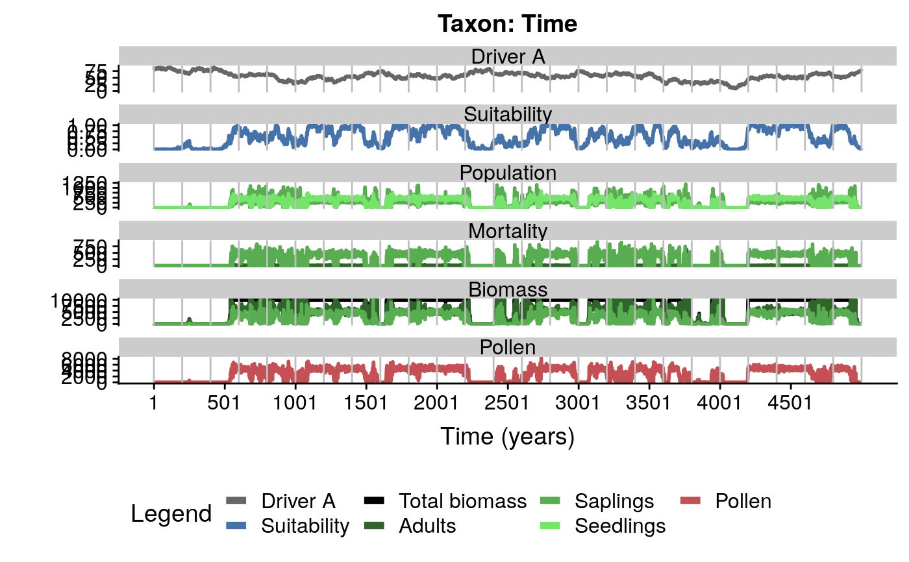

This function takes as input the output of simulatePopulation, and plots the pollen abundance, number of individuals, biomass, driver, and environmnetal suitability of each simulation outcome.
plotSimulation( simulation.output = NULL, species = "all", burnin = FALSE, filename = NULL, time.zoom = NULL, panels = c("Driver A", "Driver B", "Suitability", "Population", "Mortality", "Biomass", "Pollen" ), plot.title = NULL, width = 12, text.size = 20, title.size = 25, line.size = 1 )
| simulation.output | output of |
|---|---|
| species | a number or vector of numbers representing rows in the parameters dataframe, or a string or vector of strings referencing to the "label" column of the parameters dataframe. |
| burnin | if |
| filename | character string, name of output pdf file. If NULL or empty, no pdf is produced. It shouldn't include the extension of the output file. |
| time.zoom | vector of two numbers indicating the beginnign and end of the time interval to be plotted (i.e. "c(5000, 10000)") |
| panels | character string or vector of character strings with these possible values: "Driver A", "Driver B","Suitability", "Population", "Mortality", "Biomass", "Pollen". |
| plot.title | character string to use as plot title. |
| width | plot width in inches. |
| text.size | text size of the plot. |
| title.size | plot title size. |
| line.size | size of lines in plots. |
The user can decide what virtual taxa to plot (argument species), and what information to show throught the panels argument. Output is plotted on screen by default, and printed to pdf if the filename argument is filled.
#getting example data data(simulation) #plot first simulation plotSimulation(simulation.output = simulation[[1]])